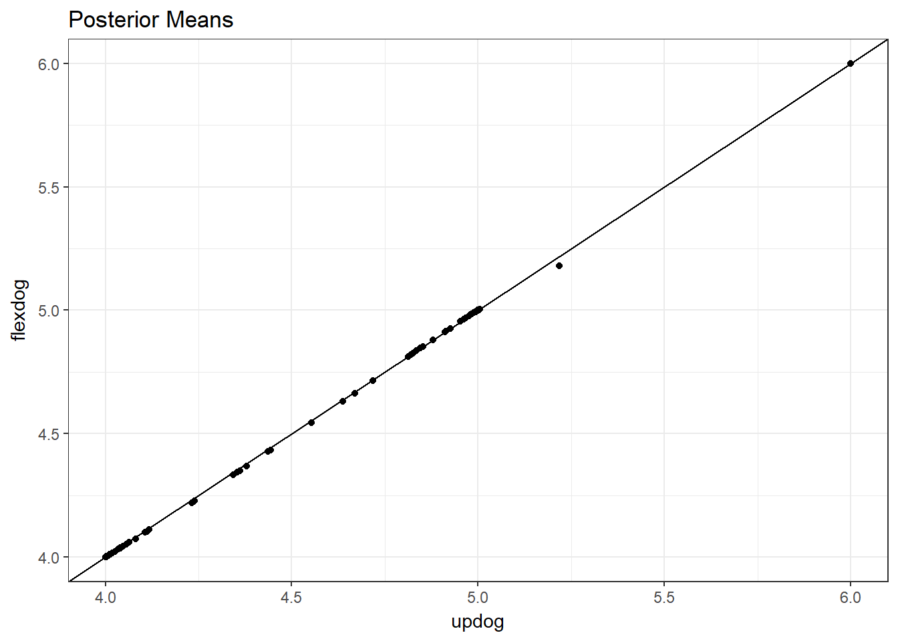
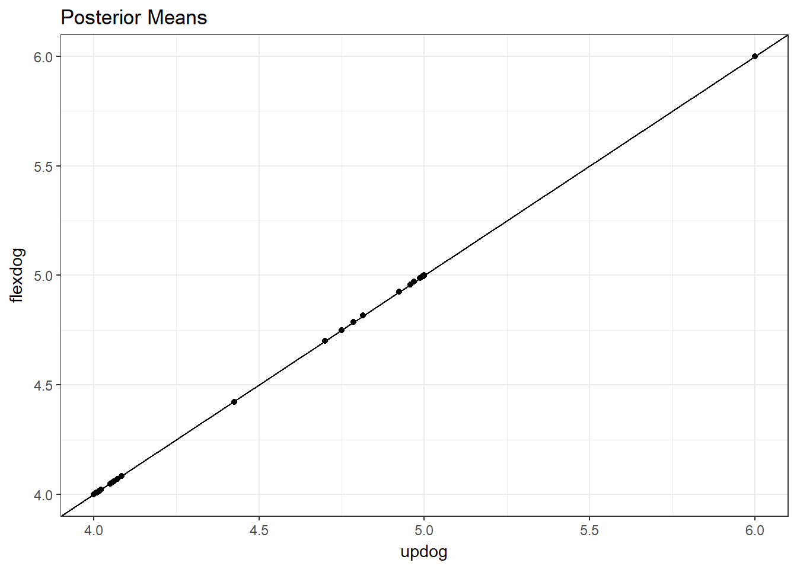
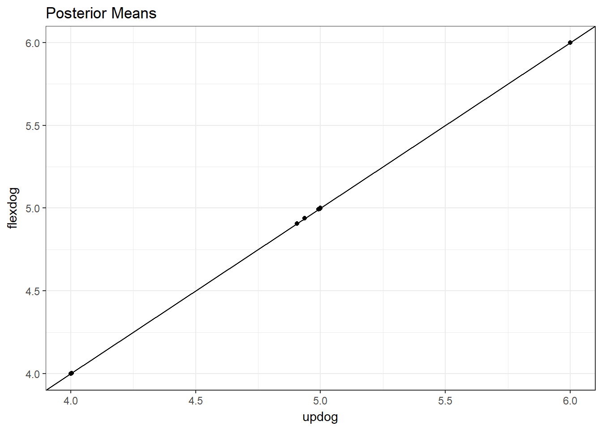
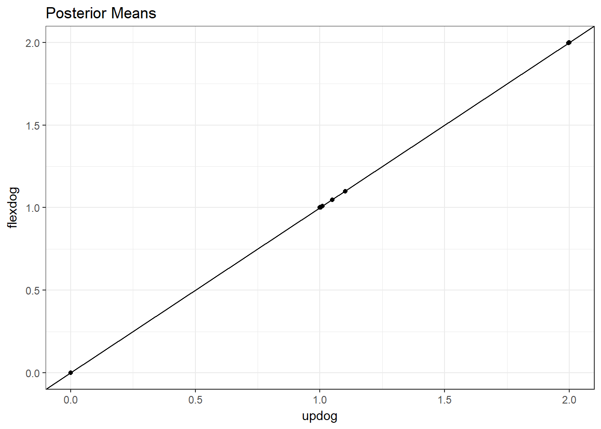

I just made it so that flexdog supports F1 and S1 populations. Here, I want to compare the fit of flexdog with that of updog and compare the time it takes to fit.
library(updog)
library(mupdog)
library(tidyverse)
mout <- readRDS("../output/shir_fit/shir_fit_nodiag1.RDS")for (index in 1:10) {
ploidy <- mout$input$ploidy
refvec <- mout$input$refmat[-1, index]
pref <- mout$input$refmat[1, index]
sizevec <- mout$input$sizemat[-1, index]
psize <- mout$input$sizemat[1, index]
utime <- system.time({
uout <- updog(ocounts = refvec, osize = sizevec, ploidy = ploidy,
model = "s1", out_prop = 0, update_outprop = FALSE)
})
ftime <- system.time({
fout <- flexdog(refvec = refvec, sizevec = sizevec, ploidy = ploidy,
model = "s1", verbose = FALSE,
p1ref = pref, p1size = psize,
fs1_alpha = 10^-5)
})
## flexdog is 3-4 times faster
cat("updog:", utime["elapsed"], "\n")
cat("flexdog:", ftime["elapsed"], "\n\n")
## They have the same posterior means
pl <- qplot(uout$postmean, fout$postmean) +
theme_bw() +
xlab("updog") +
ylab("flexdog") +
geom_abline(slope = 1, intercept = 0) +
ggtitle("Posterior Means")
print(pl)
}## updog: 1.81
## flexdog: 0.32## Warning in update_good(parvec = parvec, ocounts = ocounts, osize = osize, :
## ERROR: ABNORMAL_TERMINATION_IN_LNSRCH
## updog: 1.93
## flexdog: 0.58## Warning: Removed 1 rows containing missing values (geom_point).## updog: 1.81
## flexdog: 0.37## updog: 1.85
## flexdog: 0.36## Warning in update_good(parvec = parvec, ocounts = ocounts, osize = osize, :
## ERROR: ABNORMAL_TERMINATION_IN_LNSRCH## updog: 1.83
## flexdog: 0.31
## updog: 1.72
## flexdog: 0.36## updog: 1.61
## flexdog: 0.16## Warning in update_good(parvec = parvec, ocounts = ocounts, osize = osize, :
## ERROR: ABNORMAL_TERMINATION_IN_LNSRCH
## updog: 1.64
## flexdog: 0.28## updog: 1.64
## flexdog: 0.16
## updog: 1.64
## flexdog: 0.35sessionInfo()## R version 3.4.3 (2017-11-30)
## Platform: x86_64-w64-mingw32/x64 (64-bit)
## Running under: Windows 10 x64 (build 15063)
##
## Matrix products: default
##
## locale:
## [1] LC_COLLATE=English_United States.1252
## [2] LC_CTYPE=English_United States.1252
## [3] LC_MONETARY=English_United States.1252
## [4] LC_NUMERIC=C
## [5] LC_TIME=English_United States.1252
##
## attached base packages:
## [1] stats graphics grDevices utils datasets methods base
##
## other attached packages:
## [1] forcats_0.2.0 stringr_1.3.0 dplyr_0.7.4 purrr_0.2.4
## [5] readr_1.1.1 tidyr_0.7.2 tibble_1.4.2 ggplot2_2.2.1
## [9] tidyverse_1.2.1 mupdog_0.0.1 updog_1.0.0
##
## loaded via a namespace (and not attached):
## [1] reshape2_1.4.3 haven_1.1.0 lattice_0.20-35 colorspace_1.3-2
## [5] htmltools_0.3.6 yaml_2.1.18 rlang_0.2.0 pillar_1.2.1
## [9] foreign_0.8-69 glue_1.2.0 modelr_0.1.1 readxl_1.0.0
## [13] bindrcpp_0.2 foreach_1.4.4 bindr_0.1 plyr_1.8.4
## [17] munsell_0.4.3 gtable_0.2.0 cellranger_1.1.0 rvest_0.3.2
## [21] codetools_0.2-15 psych_1.7.8 evaluate_0.10.1 labeling_0.3
## [25] knitr_1.20 parallel_3.4.3 broom_0.4.3 Rcpp_0.12.16
## [29] backports_1.1.2 scales_0.5.0 jsonlite_1.5 mnormt_1.5-5
## [33] hms_0.4.0 digest_0.6.15 stringi_1.1.6 grid_3.4.3
## [37] rprojroot_1.3-2 cli_1.0.0 tools_3.4.3 magrittr_1.5
## [41] lazyeval_0.2.1 crayon_1.3.4 pkgconfig_2.0.1 xml2_1.2.0
## [45] lubridate_1.7.1 assertthat_0.2.0 rmarkdown_1.9 httr_1.3.1
## [49] rstudioapi_0.7 iterators_1.0.9 R6_2.2.2 nlme_3.1-131
## [53] compiler_3.4.3This R Markdown site was created with workflowr